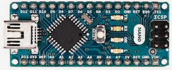
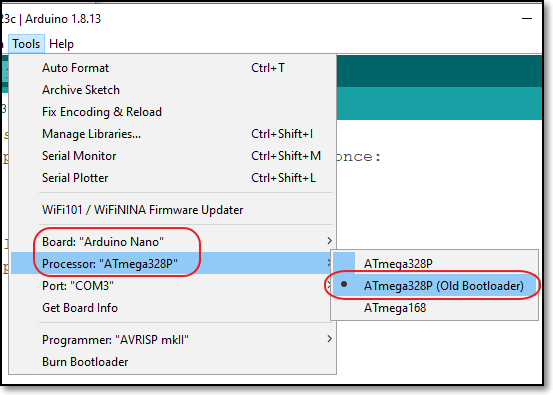

name: default-page layout: true background-image: url("fablabsp_icon_100px.png") background-position: 98% 2% --- class: center, middle # Moving from UNO to Nano --- template: default-page layout: false # UNO vs Nano boards ### Both boards were developed by Arduino based on ATMega328 processor .left-column-50[ <img src="arduino_uno.png" style="width:270px"> - ATMega328 / ATMega328P - Size 68.6 x 53.3 mm - USB A connector, External Power Source - Price $37.50 ($5 clone) ] .right-column-50[  - ATMega328P - Size 43.2 x 18.5 mm - USB Type Mini connector - Price $32 ($5 clone) ] --- template: default-page layout: false # Workflow .left-column-50[ - Develop your code on the UNO - Test with peripherals, devices, connections - Transfer connections to Nano - Compile, Upload code as usual ### Difference - Need to select Nano as processor board - Need to select Processor: ATMega328P > Old Bootloader ] .right-column-50[  ] --- class: center, middle # Moving from UNO to Nano ### .red[End]